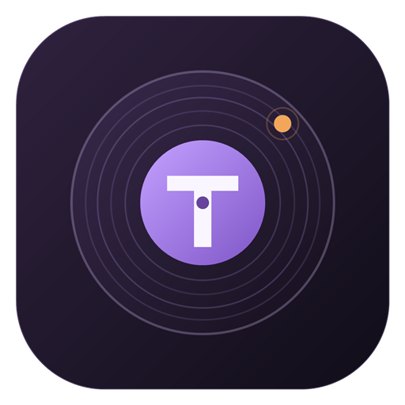

Corregir y mejorar
Problemas responsive, flujos rotos, formularios, funciones pequeñas en React y mejoras puntuales en un sistema existente.
DESARROLLADOR FULL-STACK INDEPENDIENTE· NEUQUÉN, ARGENTINA
Ayudo a negocios a mejorar las herramientas digitales que usan: arreglos puntuales, dashboards, integraciones API y aplicaciones web, desde el relevamiento hasta el deploy.
01 / CÓMO PUEDO AYUDAR
Trabajo mejor con un alcance pequeño, un problema real y una entrega concreta.
Problemas responsive, flujos rotos, formularios, funciones pequeñas en React y mejoras puntuales en un sistema existente.
APIs REST, flujos de datos e integraciones que reducen tareas repetitivas y facilitan el uso de la información.
Paneles de stock, ventas, flujo de caja y operación pensados para el trabajo real de un negocio pequeño.
Sitios rápidos y adaptables para negocios, con contenido claro, vías de contacto y mantenimiento sencillo.
02 / TRABAJO PARA CLIENTES
Proyectos pagos primero. Los experimentos personales están aparte y se pueden omitir.
Casos de estudio: integración de Tango Gestión y gestión de stock · dashboard de gestión para negocios.
Dashboard de stock conectado a Tango ERP. Reúne artículos, proveedores, ventas y existencias en un mismo flujo; permite definir mínimos y máximos y calcular qué reponer.
El equipo puede preparar órdenes de compra y exportar reportes operativos a Excel o PDF.
Desarrollo pago para cliente · Código y datos privados
Ver el caso de estudio ↗Proyecto pago independiente para la gestión diaria del negocio. Sus módulos abarcan stock, ranking de proveedores, compras y remitos, flujo de caja y cheques, calendario de pagos, gastos, costo de mercadería, cobranzas y evolución de ventas.
La información se organiza en vistas conectadas para pasar de un número al contexto operativo que lo explica.
Desarrollo pago para cliente · Código y datos privados
Ver el caso de estudio ↗
Un espacio de trabajo para editar playlists con más control. Permite buscar y ordenar temas, reacomodarlos arrastrando, revisar un borrador y confirmar los cambios en Spotify. Las verificaciones de snapshot ayudan a detectar cambios hechos en otro lugar.
También explora detección de duplicados, copias privadas de playlists, etiquetas de canciones y un modo móvil para etiquetar.
Proyecto independiente · Repositorio de código privado
Un anotador mobile-first para noches de juegos. Truco, Cambio y Bazas tienen salas compartidas sincronizadas mediante una API TypeScript y PostgreSQL en Neon, para seguir el mismo puntaje desde varios teléfonos; Qwixx y Tectonic suman otras formas de jugar. Los juegos individuales guardan localmente y funcionan sin conexión.
Como experimento de visión artificial, también hice un detector de espacios de estacionamiento con Python, YOLO y OpenCV. Ver repositorio ↗
03 / UN POCO SOBRE MÍ
Soy Analista en Sistemas y Técnico Electrónico de Neuquén, Argentina. Trabajo entre frontend, backend y datos; disfruto transformar necesidades cotidianas del negocio en software que la gente pueda usar de verdad.
04 / PRÓXIMO PASO
Cuéntame el problema, cómo se ve una entrega terminada y si hay una fecha límite. Te respondo con un próximo paso y un alcance claros.
Empezar una conversación ↗